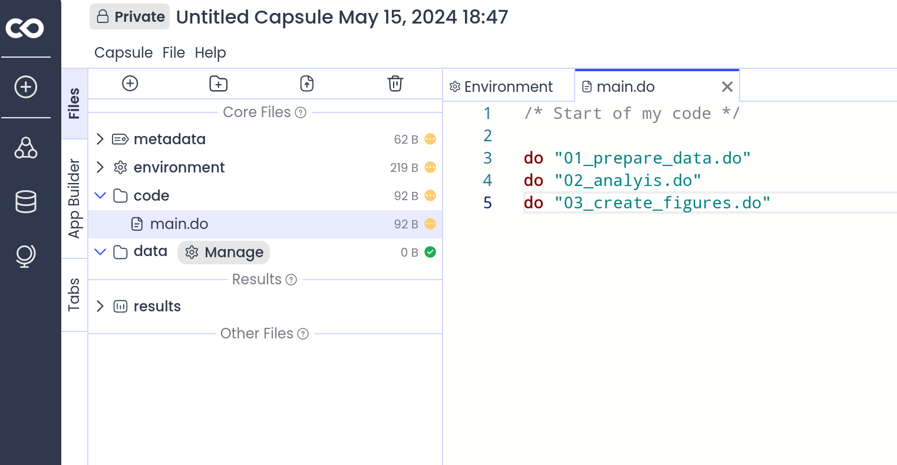
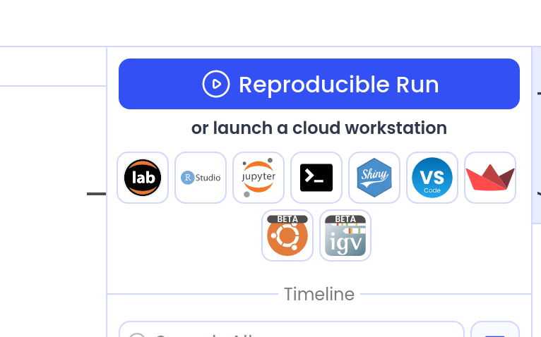

Using Containers to Validate Research on Confidential Data at Scale
Lars Vilhuber
May 2024
Introduction
Concerns
Concerns about confidentiality in statistical products have increased in the past several years:
- New disclosure avoidance techniques in the Decennial Census garnered much attention (an understatement…),
- also concerns about formal disclosure avoidance techniques for public-use microdata files (PUMFs) (see Census Bureau delayed implementation of such methods for the American Community Survey)
Creating synthetic data
- Much effort put into creating privacy-protected or synthetic data (this conference!)
- Goal of each of these: release and forget
But what if users don´t trust the data?
Direct access
- Many different RDC-style systems have been stood up over the past 35+ years in multiple countries
- Provide direct access to confidential (pseudonymous) data
- Still need output disclosure avoidance measures (mostly ad-hoc)
- Expensive for stat agencies to maintain, expensive for users to use
Alternative: validate analyses run on synthetic data against the confidential data
Validation and Verification
- long-running pilot projects with (non-formal) synthetic microdata products (SynLBD, SIPP Synthetic Beta) came to an end in 2022 (End of life for the Cornell Synthetic Data Server September 30, 2022)
- not sure how active OPM Verification server was (Barrientos et al. 2018)
- scale an issue
- not done or planned for most synthetic data products
Scaling up
These pilot projects were not set up to scale, and yet they demonstrated that there is a need for such a process.
Background
Anecdotal evidence with SDS
From conversations/informal surveys:
- researchers were happy with the ability to access data without having to request a full-blown project in an FSRDC
- somewhat frustrated by the process (slowness)
Reproducibility and SDS
SDS validation required typically substantial human debugging
- Reason: problems with the reproducibility of code in the social sciences despite similarity of environment.
Intermediate causes
- no strong pre-testing of reproducibility, often intense use of interactive programming practices
- divergence in environments over time
- divergence of data schemas over time
Failure to maintain strong links
Some broader evidence
In a sample of over 8,000 replication packages associated with high-profile economics articles, only 30% had some sort of master script.
Other systems
Statistical agencies and research institutes have explored various ways to scale up access to confidential data, without full (remote) access to confidential data.
- Statistics Canada: Real Time Remote Access (RTRA) process,
- Norway: Microdata.no system,
- Germany/IAB: JoSuA system
Access restrictions
Most such processes have limitations, including in their utility for general purpose analysis
Most still have some strong access limitations
- RTRA: organizational application process
- microdata.no: Institutional MOU (and only Norwegian residents)
- IAB: proposal process
Analysis restrictions
Many systems strongly limit the type of analysis that is feasible by
- RTRA: restricting the software keywords that can be used, subset of
SAS allowing to “calculate frequencies, means, percentiles, percent
distribution, proportions, ratios and shares.
- microdata.no: by creating a structured new statistical language (albeit with increasingly sophisticated capabilities)
Comparison
The comparison researchers and analysts make is (for right or wrong) to the unfettered use of public-use data that they trust …
The quest
Direct access is expensive
Remote-access or local secure access in the form of physical or virtual secure data enclaves is still the dominant - but expensive - way to access confidential data.
The dominant method of access thus forces researchers to choose between lower quality data in an environment that corresponds to their preferred computing method (public-use data), and higher quality confidential data in environments that are expensive for researchers, data providers, or both.
Possible solution
Containers
Containers are lightweight, standalone, executable packages that contain everything needed to run an application, including the code, a runtime, libraries, environment variables, and config files.1
Containerized validation
- Containers,
- hosted on public cloud platform or run on researcher laptop
- provide access to synthetic or “plausible” data, and coding resources
- mechanism to ensure authors can validate reproducibility of analysis
- Then submitted to the confidential computing
environment.
- analysis modified to use confidential data
- enables a wide spectrum of plug-in disclosure avoidance measures as well
- similar in spirit: IAB JoSuA system, but without hosting costs
Containers in the wild
One of the first mentions of containers for scientific research was Boettiger (2015).
- CodeOcean is a commercial service facilitating that process by making the resources available through a web browser
- Wholetale and MyBinder are other (academically oriented) services that provide similar functionality2
- Many universities HPC clusters provide some support
(
Apptainermore popular thanDocker)
Containers in Social Sciences are still a challenge!
In a sample of over 8,000 replication packages
associated with high-profile economics articles, only 11 had a
Dockerfile (the key build script for
containers).
(That’s n=11, not 11% - in fact, it’s 0.13% of replication packages.)
What’s new
The use of containers in this way is novel as a systematic way to provide scalable, potentially high-throughput validation, and differs in usage from previous methods, such as the Cornell Synthetic Data Server.
I believe that it is promising as a modern way of implementing validation when data are confidential.
User perspective
Use provided container with pre-provisioned data
Possibilities:
- use directly (safer)
- use as input to build own container (addition of components)
Critically
Pre-provisioned data does not need to be “analytically valid” - need only be “plausible”!
Develop where feasible
Containers are generalized technology
- can be run on provisioned university computing infrastucture (most HPC systems can run containers)
- can run on desktops as needed (free container software available for all major operating systems for non-commercial use)
- can run on generic cloud infrastructure (AWS, Google Cloud, Azure)
- can run on custom cloud infrastructure specialized in running containers (Nuvolos, Codeocean, Onyxia, etc.)
- can be prepared by research institutions for use on their custom infrastructure (e.g., NSF-funded Whole Tale project, self-hosted Onyxia)
Whole Tale
Codeocean
Onyxia

Cost to user
Cost: $0 to low $
Run a container from the command line
Run a container from Codeocean


Develop at will
- Arbitrary Stata, R, Python, etc. code

Provider perspective: Secure build
First impressions
Internal build
- Prepare an internal container, compliant with IT security standards
- secure configuration of container running system (base system)
- add layer of common software (Stata, R, Python, various combinations) for analysis system
- test suite (scripted) for updates
Ability to leverage existing experience
- Can leverage existing container recipes for well-known software
packages (
rockerfor R containers, datascience containers) - Can leverage existing containers and harden the OS (if necessary)
- Already has process in place to securely vet imported libraries and packages - can be reused
Public build
- Public “recipe” is the same as for internal
- possibly up to secure base container - close enough is good enough
- built by StatAgency itself
Example: Build internal analysis system
Example: Build public analysis system
Optional elements
While not strictly necessary, containers might contain
- development environments (Stata GUI, Jupyter notebooks, Rstudio)
- standard set of libraries (Stata ado files, R libraries, Python packages)
Public posting
Prepared containers and recipes can be posted on public registries:
- post container on public registry (Docker Hub, Google Container Registry, etc.)
- post recipe on public repository (GitHub, GitLab, etc.)
Posted on Docker Hub

Also required: data
But if validation and verification are a key part of it, then data quality can be lower (plausible, not analytically valid)
Validation
User Develops
User tests

User Submits for Validation
- Submit container recipe (
Dockerfile) and code for validation to StatAgency.gov
./Dockerfile
./code/01_prepare_data.R
./code/02_run_analysis.R
./code/03_create_figures.RImportant security aspect
No binary code is transmitted
Any external data may need to be vetted.
StatAgency Upon receipt of submission
(Automated) system receives and processes
./Dockerfile
./code/01_prepare_data.R
./code/02_run_analysis.R
./code/03_create_figures.RStatAgency validates reproducibility
Just to check that user actually did test…
Provider validates reproducibility
If rejected, automated system returns to user without further ado.
If accepted, proceed to validation step
Provider rebuilds container using secure base image
- Input is only the
Dockerfilerecipe - Security scanning of (plaintext) scripts and of resulting image
- Build can occur in a sandboxed environment
Necessary restrictions
While useful in the public space, when running internally and for pre-vetting,
- containers would be restricted in terms of internet access
- containers may be built against only known safe sources of packages (e.g. internal mirrors)
Once image is built

Validate against confidential data
- Same image is used for confidential data
- Only difference: swap out public (test) data for confidential data
- Processing may involve more complex processing, for instance bootstrapping errors or obtaining multiple estimates across various partially protected datasets
- Disclosure avoidance may involve transparently modifying certain functions, or post-processing of results
Return results to user
Challenges
Automation or streamlining of disclosure avoidance
Scalability of a system hinges critically on streamlined output vetting.
However, the challenge of creating automated and reliable disclosure avoidance procedures is not unique to the validation process described here.
Security of containers
In general, bad idea to blindly run untrusted containers. However, this is a solved problem in the industry, facilitated by the (expected) sparsity of the build process.
User acceptance
As a reminder, most social scientists are not familiar with containers.
- Mitigation:
- Off-the-shelf solutions (Codeocean, Whole Tale, Onyxia)
- IT support at universities and research institutions
Advantages
Existing technology
- Containers are well-known technology, including in other sciences
- Used by online services (Codeocean, Onyxia, but also Overleaf, etc.)
Scalability
- Easy to scale to large number of users
- Easy to scale to technologies that allow for sophisticated but computing intensive disclosure avoidance
Cheap
- for users
- most of the core enabling technology is free to use
- support by university IT is generally available
- for providers (StatAgency)
- no need to provision scaled infrastructure for users
- can leverage existing on-site software stacks (e.g., assuming that anything used internally is already security-vetted)
Additional benefit
- StatAgency can accumulate a library of confirmed reproducible containers and models, and can test out new data, disclosure methods, etc. at scale against prior scientific findings
Consider the new disclosure avoidance method for ACS 2035
- Can be tested against every submitted model that used prior ACS, as long as database schema is the same.
Thank you
Quick links for the curious

This presentation
References
https://www.datacamp.com/tutorial/docker-for-data-science-introduction↩︎
An earlier version of this presentation mentioned Gigantum. As is not unusual in this space, Gigantum no longer functions as a company.↩︎
Image credit Christopher Scholz, under
 CC-By-SA
2.0↩︎
CC-By-SA
2.0↩︎